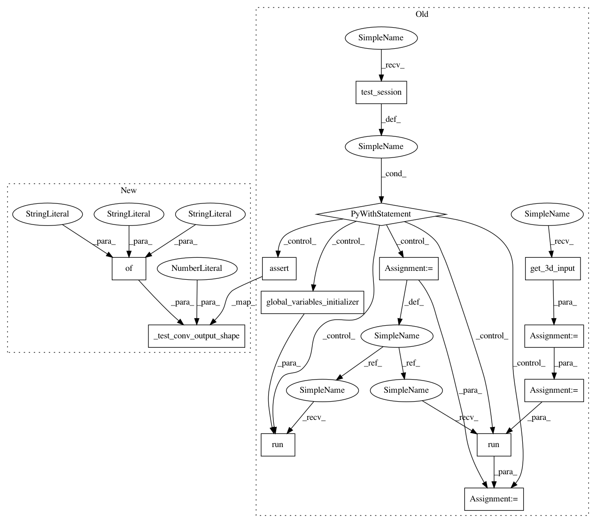

863a9dcee691e850e79d97a16abb977e24324fa1,tests/convolution_test.py,ConvTest,test_conv_3d_bias_reg_shape,#ConvTest#,42
Before Change
self.assertAllClose((2, 16, 16, 16, 10), out_3d.shape)
def test_conv_3d_bias_reg_shape(self):
x_3d = self.get_3d_input()
conv_reg = ConvLayer(10, 3, 2,
w_regularizer=regularizers.l2_regularizer(0.5),
with_bias=True,
b_regularizer=regularizers.l2_regularizer(0.5))
conv_reg_out = conv_reg(x_3d)
print(conv_reg)
with self.test_session() as sess:
sess.run(tf.global_variables_initializer())
out_3d = sess.run(conv_reg_out)
self.assertAllClose((2, 8, 8, 8, 10), out_3d.shape)
def test_3d_convlayer_default_shape(self):
x_3d = self.get_3d_input()
conv_3d = ConvolutionalLayer(10, 3, 1)
conv_3d_out = conv_3d(x_3d, is_training=True)
After Change
output_shape=(2, 16, 16, 8, 10))
def test_conv_3d_bias_reg_shape(self):
input_param = {"n_output_chns": 10,
"kernel_size": [3, 1, 3],
"stride": [2, 2, 2],
"with_bias": True,
"w_regularizer": regularizers.l2_regularizer(0.5),
"b_regularizer": regularizers.l2_regularizer(0.5)}
self._test_conv_output_shape(rank=3,
param_dict=input_param,
output_shape=(2, 8, 8, 8, 10))
def test_3d_convlayer_default_shape(self):
input_param = {"n_output_chns": 10,
"kernel_size": 3,
In pattern: SUPERPATTERN
Frequency: 3
Non-data size: 13
Instances
Project Name: NifTK/NiftyNet
Commit Name: 863a9dcee691e850e79d97a16abb977e24324fa1
Time: 2017-07-17
Author: wenqi.li@ucl.ac.uk
File Name: tests/convolution_test.py
Class Name: ConvTest
Method Name: test_conv_3d_bias_reg_shape
Project Name: NifTK/NiftyNet
Commit Name: 863a9dcee691e850e79d97a16abb977e24324fa1
Time: 2017-07-17
Author: wenqi.li@ucl.ac.uk
File Name: tests/convolution_test.py
Class Name: ConvTest
Method Name: test_conv_3d_bias_reg_shape
Project Name: NifTK/NiftyNet
Commit Name: 863a9dcee691e850e79d97a16abb977e24324fa1
Time: 2017-07-17
Author: wenqi.li@ucl.ac.uk
File Name: tests/convolution_test.py
Class Name: ConvTest
Method Name: test_3d_conv_default_shape
Project Name: NifTK/NiftyNet
Commit Name: 863a9dcee691e850e79d97a16abb977e24324fa1
Time: 2017-07-17
Author: wenqi.li@ucl.ac.uk
File Name: tests/convolution_test.py
Class Name: ConvTest
Method Name: test_3d_convlayer_default_shape